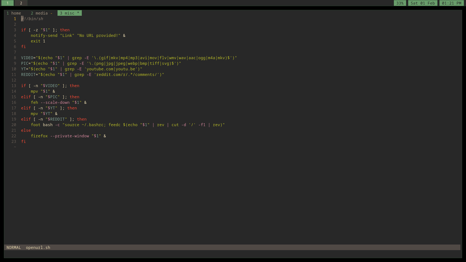

Software Stack
I use a lot of software. I try to keep it all as lightweight as possible. Some of I made. Some of it other wonderful people made. Here's some of it:
Environment
- Operating System: fedora linux
- Window Manager: sway
- Terminal: foot
- Image Viewer: feh
- Clipboard: wl-clipboard
- Launcher: tofi
- Files: nnn
- Audio Backend: pavucontrols
- Brightness/Audio Controls: simplecontrols
- Notifications: dunst
- Networking: nmtui

Fun Things
- Browser: firefox
- YouTube Videos With Family: freetube
- Personal YouTube Videos: yt-x
- Archived Videos: mpv
Ideally, I would use MPV for everything, but FreeTube is unreasonably convenient if anyone else is using my device, so electron is tolerated.
¯\_( ツ)_/¯
Programming
- Editor: helix
- Multiplexer: tmux
- Languages: rust, c, html, and css
- Shell: dash for scripts, bash for interactive environment
The primary thought process in software/language choice is to opt for something that can run on a computer from 1990, but with the power of my modern hardware. I understand developer time is a consideration, but it seems odd to wrap everything in Electron and write in JS with 40 libraries when languages like Rust allow for efficiency with the all the bells and whistles.
Helix is a fantastic little program. It is faster than both neovim and vim, and features every plugin I might want integrated automatically without any plugin loading system. If vim could keep up in speed, I would gladly bring it back, but it is currently not able to handle large files as well as Helix.